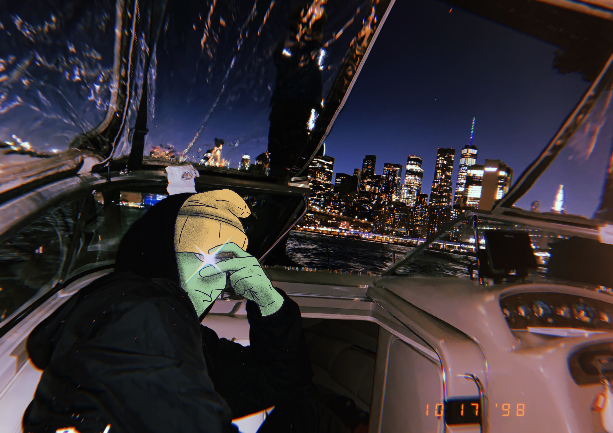

The work of Tyler Downing, aka Spiffie Hippie, is that of which strives to reach
the common culture that we are all a part of. This character named Head Boy is
supposed to encase the idea of the “smoke break” and stepping away from certain
obligations to be able to get time to yourself for your own sanity. I grew up doodling
which then fed into more thoughtful drawing, which was then the spawn of this current
art experience. I savor when work has an even balance of detail and form, allowing the
eye to wander around the image. Every piece of work that I create is more or less trying
to pull the viewer into the physical space or headspace of the piece, taking them out of
the surrounding area that they might be comfortable in. Most of my illustrations are of
creatures that have various combined features of creatures on Earth. When an artwork
makes you think ‘What was this guy thinking?’ is an accomplishment in my book.